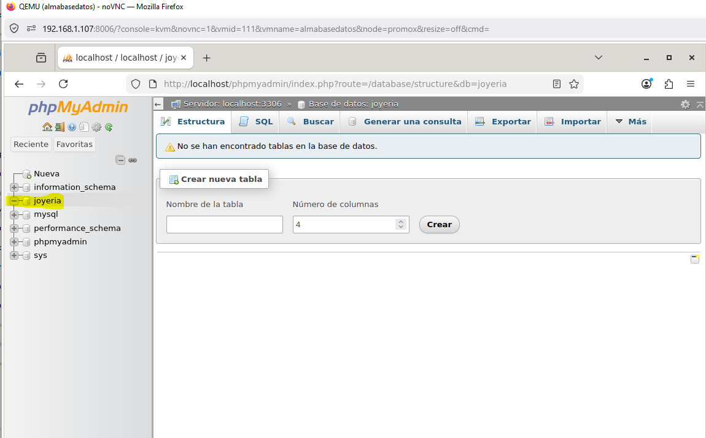
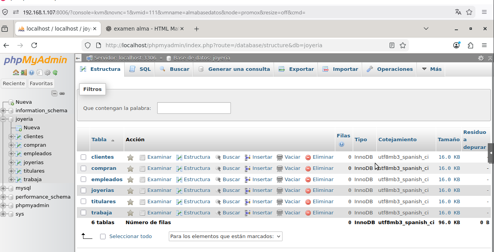
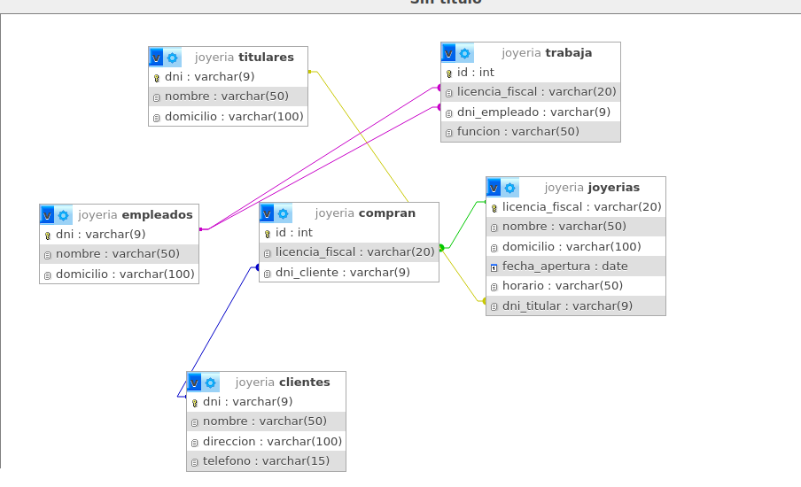
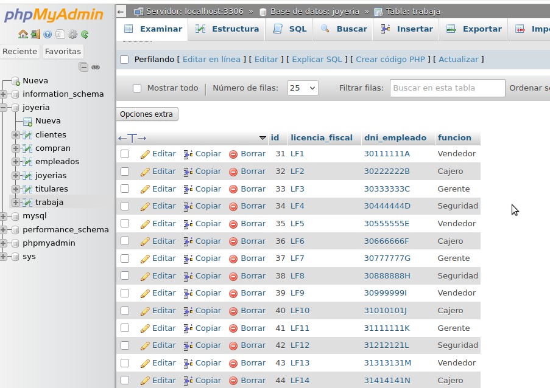

Transformar el modelo entidad-relación en un modelo relacional implementado en MySQL, utilizando phpMyAdmin para la creación de tablas, relaciones y datos.
Se crea la base de datos desde phpMyAdmin.

Se crean las tablas desde la interfaz gráfica, definiendo los campos, tipos de datos y claves primarias.
Este método permite visualizar claramente la estructura de cada tabla.
También es posible crear todas las tablas mediante sentencias SQL:
CREATE TABLE titulares (
dni VARCHAR(9) PRIMARY KEY,
nombre VARCHAR(50),
domicilio VARCHAR(100)
);
CREATE TABLE joyerias (
licencia_fiscal VARCHAR(20) PRIMARY KEY,
nombre VARCHAR(50),
domicilio VARCHAR(100),
fecha_apertura DATE,
horario VARCHAR(50),
dni_titular VARCHAR(9)
);
CREATE TABLE clientes (
dni VARCHAR(9) PRIMARY KEY,
nombre VARCHAR(50),
direccion VARCHAR(100),
telefono VARCHAR(15)
);
CREATE TABLE empleados (
dni VARCHAR(9) PRIMARY KEY,
nombre VARCHAR(50),
domicilio VARCHAR(100)
);
CREATE TABLE compran (
id INT AUTO_INCREMENT PRIMARY KEY,
licencia_fiscal VARCHAR(20),
dni_cliente VARCHAR(9)
);
CREATE TABLE trabaja (
id INT AUTO_INCREMENT PRIMARY KEY,
licencia_fiscal VARCHAR(20),
dni_empleado VARCHAR(9),
funcion VARCHAR(50)
);

Las relaciones se crean desde la vista de relaciones o diseñador de phpMyAdmin, definiendo claves foráneas entre las tablas.
Esto permite representar correctamente el modelo entidad-relación en la base de datos.A

Se pueden insertar registros desde la pestaña "Insertar" de phpMyAdmin.
También se pueden insertar datos mediante sentencias SQL:
INSERT INTO titulares (dni, nombre, domicilio)
VALUES ('11111111A', 'Juan Perez', 'Valencia');
Este proceso se repite hasta completar los registros requeridos en cada tabla.

Se ha realizado correctamente la transformación del modelo entidad-relación a un modelo relacional, implementándolo en MySQL mediante phpMyAdmin.
Se han utilizado tanto herramientas gráficas como sentencias SQL, lo que permite comprender tanto el funcionamiento visual como técnico de una base de datos.
Este proceso es fundamental en el desarrollo de aplicaciones que requieren almacenamiento y gestión de información estructurada.